Color Splash Smash
Carver E&S
- Role
- Photo Editor / Designer
- Type
- Color Splash Photography / RGB Split
- Date
- Apr 2022 ~> June 2022
- Site Link
- HS Freshman Year Final Project Google Site
> Context & Project Overview <
Most of these images were part of my Intro to Computer Science final project during my freshman year of high school. All of these images were taken in Super Smash Bros. Ultimate and then edited using Pixlr.
My overall goal was to use these background elements to portray the intricacies of one of my favorite videogames at the time, Super Smash Bros. Ultimate. The requirements for the project were to use Google Sites to create a multi-page website on a topic of choice. These intentionally loose requirements allowed me to explore my creativity and focus on the visual aspects of the project.
> Techniques <
Two primary photo editing techniques were used in this project: color splash and RGB split. Color splash involves converting a full-color image into black-and-white (monochrome) or sepia while keeping one or more specific elements in their original, vibrant color states to create a dramatic popout effect. RGB split involves separating the red, green, and blue channels of an image and then displacing or offsetting them slightly from one another to create a color fringe (or glitchy) effect.
> Design Gallery <
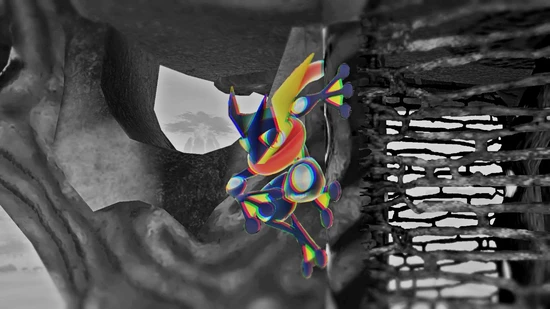
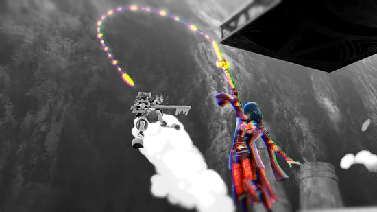
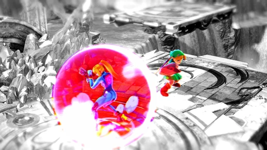
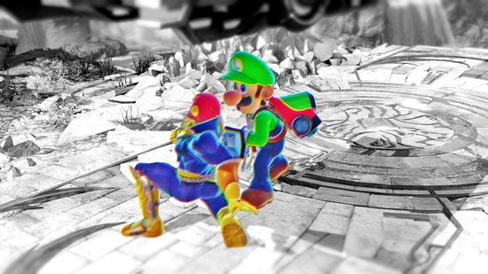
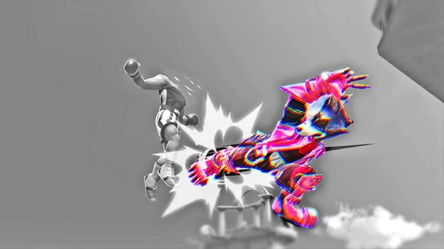
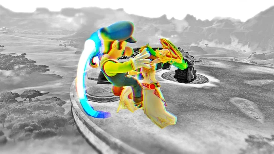
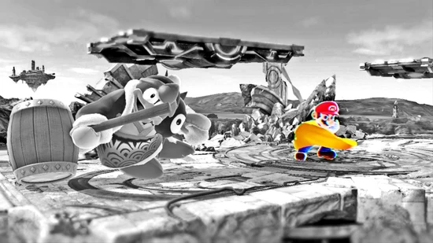
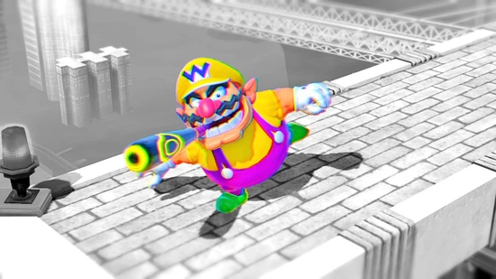
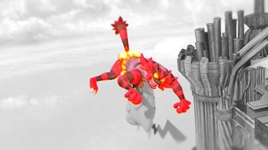
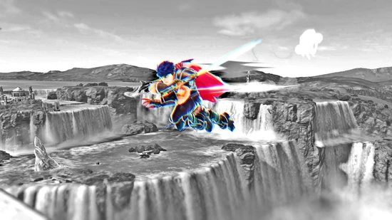
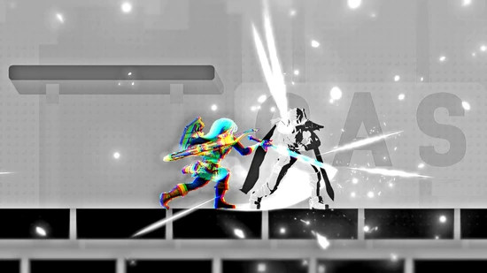
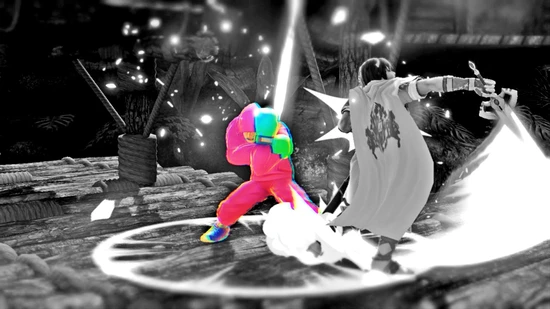
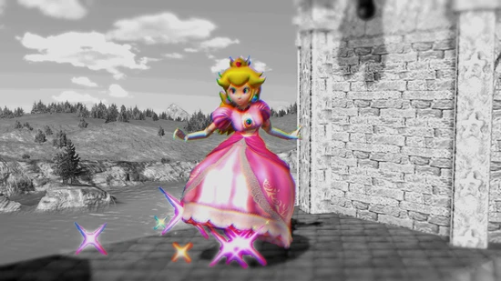
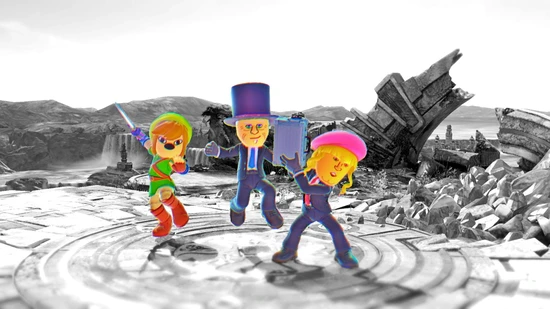
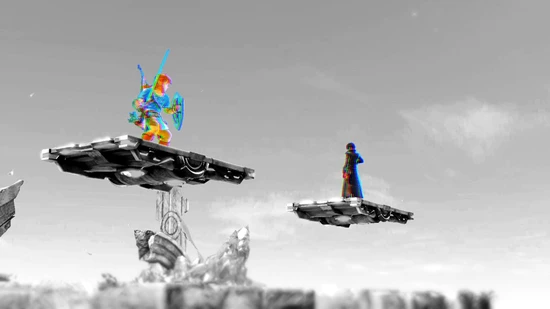
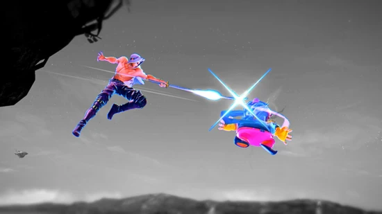
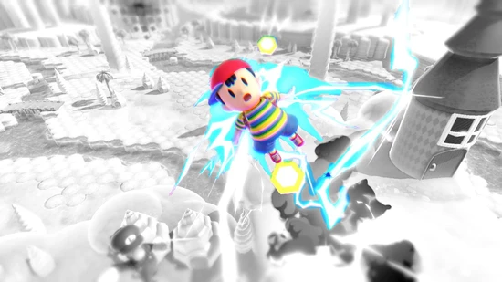
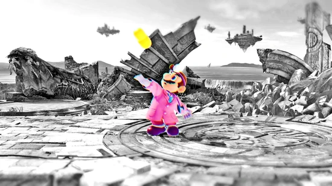
> Reflection <
Even as of today, I still find the techniques I applied in this project to be incredibly useful and visually striking. The combination of color splash and RGB split allowed me to create a unique visual style that really made the images pop. I still find myself using these techniques (along with other creative approaches) in my current work, particularly with posters and flyers.